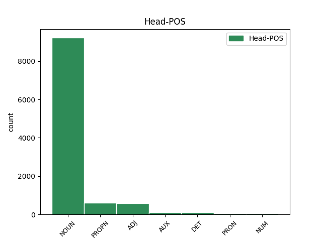

Distribution of features within this leaf

Agreement Rules sorted by frequency.
- When the dependent token is the modifer(mod) of the head token, and the head token is NOUN and the dependent token is ADJ.
1 Здрави _ _ _ _ 0 _ _ _
2 князи _ _ _ _ 0 _ _ _
3 и _ _ _ _ 0 _ _ _
4 дружина _ _ _ _ 0 _ _ _
5 побарая _ _ _ _ 0 _ _ _
6 за _ _ _ _ 0 _ _ _
7 христьяны _ _ _ _ 0 _ _ _
8 на _ _ _ _ 0 _ _ _
9 поганыя поганыи ADJ A- Case=Acc|Degree=Pos|Gender=Masc|Number=Plur|Strength=Weak 10 mod _ ref=217
10 плъки пълкъ NOUN Nb Case=Acc|Gender=Masc|Number=Plur 0 _ _ _
1 и _ _ _ _ 0 _ _ _
2 Двина _ _ _ _ 0 _ _ _
3 болотомъ _ _ _ _ 0 _ _ _
4 течетъ _ _ _ _ 0 _ _ _
5 онымъ онъ DET Pd Case=Dat|Gender=Masc|Number=Plur 7 det _ ref=143
6 грознымъ _ _ _ _ 0 _ _ _
7 полочаномъ полочанинъ NOUN Nb Case=Dat|Gender=Masc|Number=Plur 0 _ _ _
8 подъ _ _ _ _ 0 _ _ _
9 кликомъ _ _ _ _ 0 _ _ _
10 поганыхъ _ _ _ _ 0 _ _ _
1 Игорь _ _ _ _ 0 _ _ _
2 мыслію _ _ _ _ 0 _ _ _
3 поля _ _ _ _ 0 _ _ _
4 мѣритъ _ _ _ _ 0 _ _ _
5 отъ _ _ _ _ 0 _ _ _
6 Великаго _ _ _ _ 0 _ _ _
7 Дону _ _ _ _ 0 _ _ _
8 до _ _ _ _ 0 _ _ _
9 Малаго малыи ADJ A- Case=Gen|Degree=Pos|Gender=Masc|Number=Sing|Strength=Weak 10 mod _ ref=185
10 Донца доньць PROPN Ne Case=Gen|Gender=Masc|Number=Sing 0 _ _ _
1 Свѣтлое _ _ _ _ 0 _ _ _
2 и _ _ _ _ 0 _ _ _
3 тресвѣтлое _ _ _ _ 0 _ _ _
4 слънце _ _ _ _ 0 _ _ _
5 Всѣмъ _ _ _ _ 0 _ _ _
6 тепло теплыи ADJ A- Case=Nom|Degree=Pos|Gender=Neut|Number=Sing|Strength=Strong 0 _ _ _
7 и _ _ _ _ 0 _ _ _
8 красно красьныи ADJ A- Case=Nom|Degree=Pos|Gender=Neut|Number=Sing|Strength=Strong 6 conj _ ref=182
9 еси _ _ _ _ 0 _ _ _
1 утръ _ _ _ _ 0 _ _ _
2 же _ _ _ _ 0 _ _ _
3 воззни _ _ _ _ 0 _ _ _
4 с _ _ _ _ 0 _ _ _
5 три трие NUM Ma Case=Acc|Gender=Masc|Number=Plur 6 mod _ ref=156
6 кусы кусъ NOUN Nb Case=Acc|Gender=Masc|Number=Plur 0 _ _ _
1 они онъ ADJ Pd Case=Nom|Gender=Masc|Number=Plur 0 _ _ _
2 же _ _ _ _ 0 _ _ _
3 сами самъ DET Pd Case=Nom|Gender=Masc|Number=Plur 1 det _ ref=5
4 княземъ _ _ _ _ 0 _ _ _
5 славу _ _ _ _ 0 _ _ _
6 рокотаху _ _ _ _ 0 _ _ _
1 аже _ _ _ _ 0 _ _ _
2 кто _ _ _ _ 0 _ _ _
3 ѹбиѥть _ _ _ _ 0 _ _ _
4 жену _ _ _ _ 0 _ _ _
5 то _ _ _ _ 0 _ _ _
6 тѣм тыиже DET Pd Case=Ins|Gender=Masc|Number=Sing 0 _ _ _
7 же же ADJ Pd Case=Ins|Gender=Masc|Number=Sing 6 flat _ ref=88
8 судомь _ _ _ _ 0 _ _ _
9 судити _ _ _ _ 0 _ _ _
10 ꙗко _ _ _ _ 0 _ _ _
11 же _ _ _ _ 0 _ _ _
12 и _ _ _ _ 0 _ _ _
13 мужа _ _ _ _ 0 _ _ _
1 ц҃рю _ _ _ _ 0 _ _ _
2 же _ _ _ _ 0 _ _ _
3 приспѣвшоу _ _ _ _ 0 _ _ _
4 срѣте _ _ _ _ 0 _ _ _
5 зꙋстѣнїа _ _ _ _ 0 _ _ _
6 еще _ _ _ _ 0 _ _ _
7 жива живыи ADJ A- Case=Gen|Degree=Pos|Gender=Masc|Number=Sing|Strength=Strong 8 comp:pred _ ref=312r1
8 соуща быти AUX V- Case=Gen|Gender=Masc|Number=Sing|Strength=Strong|Tense=Pres|VerbForm=Part|Voice=Act 0 _ _ _
9 несома _ _ _ _ 0 _ _ _
10 в _ _ _ _ 0 _ _ _
11 дом _ _ _ _ 0 _ _ _
1 Того тыи DET Pd Case=Gen|Gender=Masc|Number=Sing 3 det _ ref=165
2 стараго _ _ _ _ 0 _ _ _
3 Владиміра владимиръ PROPN Ne Case=Gen|Gender=Masc|Number=Sing 0 _ _ _
4 нельзѣ _ _ _ _ 0 _ _ _
5 бѣ _ _ _ _ 0 _ _ _
6 пригвоздити _ _ _ _ 0 _ _ _
7 къ _ _ _ _ 0 _ _ _
8 горамъ _ _ _ _ 0 _ _ _
9 кіевскимъ _ _ _ _ 0 _ _ _
1 Уже _ _ _ _ 0 _ _ _
2 бо _ _ _ _ 0 _ _ _
3 братіе _ _ _ _ 0 _ _ _
4 не невеселыи ADJ A- Case=Nom|Degree=Pos|Gender=Fem|Number=Sing|Strength=Weak 0 _ _ _
5 веселая веселая ADJ A- Case=Nom|Degree=Pos|Gender=Fem|Number=Sing|Strength=Weak 4 flat _ ref=75
6 година _ _ _ _ 0 _ _ _
7 въстала _ _ _ _ 0 _ _ _
1 володимѣръ _ _ _ _ 0 _ _ _
2 всеволѡдичь _ _ _ _ 0 _ _ _
3 по _ _ _ _ 0 _ _ _
4 ст҃ополцѣ _ _ _ _ 0 _ _ _
5 созва _ _ _ _ 0 _ _ _
6 дружину _ _ _ _ 0 _ _ _
7 свою _ _ _ _ 0 _ _ _
8 на _ _ _ _ 0 _ _ _
9 берестовѣмь _ _ _ _ 0 _ _ _
10 ратибора _ _ _ _ 0 _ _ _
11 киѥвьскѡ _ _ _ _ 0 _ _ _
12 тысѧчьскогѡ _ _ _ _ 0 _ _ _
13 прокѡпью _ _ _ _ 0 _ _ _
14 бѣлогородьскѡгѡ _ _ _ _ 0 _ _ _
15 тысѧчьскѡго _ _ _ _ 0 _ _ _
16 станислава _ _ _ _ 0 _ _ _
17 переꙗславьскогѡ переяславьскыи ADJ A- Case=Gen|Degree=Pos|Gender=Masc|Number=Sing|Strength=Weak 18 mod _ ref=53
18 тысѧчьскогѡ тысячьскыи ADJ A- Case=Gen|Degree=Pos|Gender=Masc|Number=Sing|Strength=Weak 0 _ _ _
19 нажира _ _ _ _ 0 _ _ _
20 мирослава _ _ _ _ 0 _ _ _
21 ꙇванка _ _ _ _ 0 _ _ _
22 чюдиновича _ _ _ _ 0 _ _ _
23 ѡлгѡва _ _ _ _ 0 _ _ _
24 мужа _ _ _ _ 0 _ _ _
1 такожде _ _ _ _ 0 _ _ _
2 и _ _ _ _ 0 _ _ _
3 вʼ _ _ _ _ 0 _ _ _
4 стрѣлницахъ _ _ _ _ 0 _ _ _
5 соуще _ _ _ _ 0 _ _ _
6 воини _ _ _ _ 0 _ _ _
7 не _ _ _ _ 0 _ _ _
8 предаша _ _ _ _ 0 _ _ _
9 с _ _ _ _ 0 _ _ _
10 но _ _ _ _ 0 _ _ _
11 бьꙗхꙋ _ _ _ _ 0 _ _ _
12 сѧ _ _ _ _ 0 _ _ _
13 со _ _ _ _ 0 _ _ _
14 инѣми _ _ _ _ 0 _ _ _
15 тоуркы турчинъ NOUN Nb Case=Ins|Gender=Masc|Number=Plur 0 _ _ _
16 внѣ _ _ _ _ 0 _ _ _
17 град _ _ _ _ 0 _ _ _
18 сꙋщими быти AUX V- Case=Ins|Gender=Masc|Number=Plur|Strength=Weak|Tense=Pres|VerbForm=Part|Voice=Act 15 mod _ ref=317r7
19 и _ _ _ _ 0 _ _ _
20 внꙋтри _ _ _ _ 0 _ _ _
21 града _ _ _ _ 0 _ _ _
1 Не _ _ _ _ 0 _ _ _
2 бысь _ _ _ _ 0 _ _ _
3 ту _ _ _ _ 0 _ _ _
4 брата братъ NOUN Nb Case=Gen|Gender=Masc|Number=Sing 0 _ _ _
5 Брячяслава _ _ _ _ 0 _ _ _
6 ни _ _ _ _ 0 _ _ _
7 другаго другыи ADJ A- Case=Gen|Degree=Pos|Gender=Masc|Number=Sing|Strength=Weak 4 conj _ ref=147
8 Всеволода _ _ _ _ 0 _ _ _
1 а _ _ _ _ 0 _ _ _
2 прокъ _ _ _ _ 0 _ _ _
3 ѥму и PRON Pp Case=Dat|Gender=Masc|Number=Sing|Person=3|PronType=Prs 0 _ _ _
4 самому самъ DET Pd Case=Dat|Gender=Masc|Number=Sing 3 det _ ref=64
5 взѧти _ _ _ _ 0 _ _ _
6 собѣ _ _ _ _ 0 _ _ _
1 володимѣръ _ _ _ _ 0 _ _ _
2 всеволѡдичь _ _ _ _ 0 _ _ _
3 по _ _ _ _ 0 _ _ _
4 ст҃ополцѣ _ _ _ _ 0 _ _ _
5 созва _ _ _ _ 0 _ _ _
6 дружину _ _ _ _ 0 _ _ _
7 свою _ _ _ _ 0 _ _ _
8 на _ _ _ _ 0 _ _ _
9 берестовѣмь _ _ _ _ 0 _ _ _
10 ратибора _ _ _ _ 0 _ _ _
11 киѥвьскѡ _ _ _ _ 0 _ _ _
12 тысѧчьскогѡ _ _ _ _ 0 _ _ _
13 прокѡпью _ _ _ _ 0 _ _ _
14 бѣлогородьскѡгѡ _ _ _ _ 0 _ _ _
15 тысѧчьскѡго _ _ _ _ 0 _ _ _
16 станислава станиславъ PROPN Ne Case=Gen|Gender=Masc|Number=Sing 0 _ _ _
17 переꙗславьскогѡ _ _ _ _ 0 _ _ _
18 тысѧчьскогѡ тысячьскыи ADJ A- Case=Gen|Degree=Pos|Gender=Masc|Number=Sing|Strength=Weak 16 appos _ ref=53
19 нажира _ _ _ _ 0 _ _ _
20 мирослава _ _ _ _ 0 _ _ _
21 ꙇванка _ _ _ _ 0 _ _ _
22 чюдиновича _ _ _ _ 0 _ _ _
23 ѡлгѡва _ _ _ _ 0 _ _ _
24 мужа _ _ _ _ 0 _ _ _
1 Нъ _ _ _ _ 0 _ _ _
2 се сии ADJ Pd Case=Nom|Gender=Neut|Number=Sing 3 subj _ ref=119
3 зло зъло NOUN Nb Case=Nom|Gender=Neut|Number=Sing 0 _ _ _
4 княже _ _ _ _ 0 _ _ _
5 ми _ _ _ _ 0 _ _ _
6 непособіе _ _ _ _ 0 _ _ _
1 И _ _ _ _ 0 _ _ _
2 начяша _ _ _ _ 0 _ _ _
3 князи _ _ _ _ 0 _ _ _
4 про _ _ _ _ 0 _ _ _
5 малое _ _ _ _ 0 _ _ _
6 се сии ADJ Pd Case=Nom|Gender=Neut|Number=Sing 7 subj _ ref=77
7 великое великыи ADJ A- Case=Nom|Degree=Pos|Gender=Neut|Number=Sing|Strength=Weak 0 _ _ _
8 млъвити _ _ _ _ 0 _ _ _
9 и _ _ _ _ 0 _ _ _
10 сами _ _ _ _ 0 _ _ _
11 на _ _ _ _ 0 _ _ _
12 себѣ _ _ _ _ 0 _ _ _
13 крамолу _ _ _ _ 0 _ _ _
14 ковати _ _ _ _ 0 _ _ _
1 Гси _ _ _ _ 0 _ _ _
2 б҃е _ _ _ _ 0 _ _ _
3 н҃шь _ _ _ _ 0 _ _ _
4 бесм҃ртʼныи _ _ _ _ 0 _ _ _
5 и _ _ _ _ 0 _ _ _
6 безначалныи _ _ _ _ 0 _ _ _
7 съдѣтелю _ _ _ _ 0 _ _ _
8 всеѧ _ _ _ _ 0 _ _ _
9 твари _ _ _ _ 0 _ _ _
10 видимыѧ _ _ _ _ 0 _ _ _
11 и _ _ _ _ 0 _ _ _
12 невидимыѧ _ _ _ _ 0 _ _ _
13 иже _ _ _ _ 0 _ _ _
14 нас мы PRON Pp Case=Gen|Gender=Masc|Number=Plur|Person=1|PronType=Prs 0 _ _ _
15 ради _ _ _ _ 0 _ _ _
16 небл҃годарныхъ неблагодарьныи ADJ A- Case=Gen|Degree=Pos|Gender=Masc|Number=Plur|Strength=Weak 14 appos _ ref=306r13
17 и _ _ _ _ 0 _ _ _
18 злонравных _ _ _ _ 0 _ _ _
19 сшед _ _ _ _ 0 _ _ _
20 с _ _ _ _ 0 _ _ _
21 н҃бси _ _ _ _ 0 _ _ _
22 и _ _ _ _ 0 _ _ _
23 въплоти _ _ _ _ 0 _ _ _
24 сѧ _ _ _ _ 0 _ _ _
25 и _ _ _ _ 0 _ _ _
26 кровь _ _ _ _ 0 _ _ _
27 свою _ _ _ _ 0 _ _ _
28 за _ _ _ _ 0 _ _ _
29 ны _ _ _ _ 0 _ _ _
30 пролїѧ _ _ _ _ 0 _ _ _
31 призри _ _ _ _ 0 _ _ _
32 оубо _ _ _ _ 0 _ _ _
33 н҃нѣ _ _ _ _ 0 _ _ _
34 влдко _ _ _ _ 0 _ _ _
35 ц҃рю _ _ _ _ 0 _ _ _
36 ѿ _ _ _ _ 0 _ _ _
37 с҃тго _ _ _ _ 0 _ _ _
38 жилиша _ _ _ _ 0 _ _ _
39 твоего _ _ _ _ 0 _ _ _
40 на _ _ _ _ 0 _ _ _
41 смиренʼныѧ _ _ _ _ 0 _ _ _
42 рабы _ _ _ _ 0 _ _ _
43 твоѧ _ _ _ _ 0 _ _ _
44 и _ _ _ _ 0 _ _ _
45 прїими _ _ _ _ 0 _ _ _
46 грѣшное _ _ _ _ 0 _ _ _
47 наше _ _ _ _ 0 _ _ _
48 м҃ленїе _ _ _ _ 0 _ _ _
1 Рекъ _ _ _ _ 0 _ _ _
2 Боянъ _ _ _ _ 0 _ _ _
3 и _ _ _ _ 0 _ _ _
4 ходы _ _ _ _ 0 _ _ _
5 на _ _ _ _ 0 _ _ _
6 Святъславля _ _ _ _ 0 _ _ _
7 пѣстворца _ _ _ _ 0 _ _ _
8 стараго _ _ _ _ 0 _ _ _
9 времени _ _ _ _ 0 _ _ _
10 Ярославля _ _ _ _ 0 _ _ _
11 Ольгова ольговъ ADJ A- Case=Gen|Degree=Pos|Gender=Masc|Number=Sing|Strength=Strong 0 _ _ _
12 коганя кагань ADJ A- Case=Gen|Degree=Pos|Gender=Masc|Number=Sing|Strength=Strong 11 appos _ ref=209
13 хоти _ _ _ _ 0 _ _ _
1 ст҃ыя _ _ _ _ 0 _ _ _
2 бц҃а _ _ _ _ 0 _ _ _
3 манастырѧ _ _ _ _ 0 _ _ _
4 ѳеѡдосьѥва _ _ _ _ 0 _ _ _
5 їѡаномь _ _ _ _ 0 _ _ _
6 митрополитомъ _ _ _ _ 0 _ _ _
7 ї _ _ _ _ 0 _ _ _
8 лукою _ _ _ _ 0 _ _ _
9 бѣлогородьскымь _ _ _ _ 0 _ _ _
10 еппсмь _ _ _ _ 0 _ _ _
11 исаиемь _ _ _ _ 0 _ _ _
12 черниговьскым _ _ _ _ 0 _ _ _
13 епспомь _ _ _ _ 0 _ _ _
14 при _ _ _ _ 0 _ _ _
15 бл҃городьнѣмь _ _ _ _ 0 _ _ _
16 кнѧзи _ _ _ _ 0 _ _ _
17 всеволодѣ _ _ _ _ 0 _ _ _
18 державному _ _ _ _ 0 _ _ _
19 русьскыя _ _ _ _ 0 _ _ _
20 землѧ _ _ _ _ 0 _ _ _
21 и _ _ _ _ 0 _ _ _
22 чадома _ _ _ _ 0 _ _ _
23 ѥго _ _ _ _ 0 _ _ _
24 володимера _ _ _ _ 0 _ _ _
25 и _ _ _ _ 0 _ _ _
26 ростислава _ _ _ _ 0 _ _ _
27 воѥводьство _ _ _ _ 0 _ _ _
28 держащю _ _ _ _ 0 _ _ _
29 кыѥвьскыя кыевьскыи ADJ A- Case=Gen|Degree=Pos|Gender=Fem|Number=Sing|Strength=Weak 30 mod _ ref=208.5
30 тысѧща тысяща NUM Ma Case=Gen|Gender=Fem|Number=Sing 0 _ _ _
31 яневи _ _ _ _ 0 _ _ _
32 игуменьство _ _ _ _ 0 _ _ _
33 держащю _ _ _ _ 0 _ _ _
34 іѡану _ _ _ _ 0 _ _ _
1 Инъгварь _ _ _ _ 0 _ _ _
2 и _ _ _ _ 0 _ _ _
3 Всеволодъ _ _ _ _ 0 _ _ _
4 и _ _ _ _ 0 _ _ _
5 вси _ _ _ _ 0 _ _ _
6 три трие NUM Ma Case=Nom|Gender=Masc|Number=Plur 7 mod _ ref=140
7 Мстиславичи мьстиславичь PROPN Ne Case=Nom|Gender=Masc|Number=Plur 0 _ _ _
8 не _ _ _ _ 0 _ _ _
9 худа _ _ _ _ 0 _ _ _
10 гнѣзда _ _ _ _ 0 _ _ _
11 шестокрилци _ _ _ _ 0 _ _ _
1 То тыи ADJ Pd Case=Nom|Gender=Neut|Number=Sing 2 subj _ ref=66
2 было быти AUX V- Aspect=Res|Case=Nom|Gender=Neut|Number=Sing|Strength=Strong|VerbForm=Part|Voice=Act 0 _ _ _
3 въ _ _ _ _ 0 _ _ _
4 ты _ _ _ _ 0 _ _ _
5 рати _ _ _ _ 0 _ _ _
6 и _ _ _ _ 0 _ _ _
7 въ _ _ _ _ 0 _ _ _
8 ты _ _ _ _ 0 _ _ _
9 плъкы _ _ _ _ 0 _ _ _
10 а _ _ _ _ 0 _ _ _
11 сицей _ _ _ _ 0 _ _ _
12 рати _ _ _ _ 0 _ _ _
13 не _ _ _ _ 0 _ _ _
14 слышано _ _ _ _ 0 _ _ _
1 и _ _ _ _ 0 _ _ _
2 се _ _ _ _ 0 _ _ _
3 же _ _ _ _ 0 _ _ _
4 пакы _ _ _ _ 0 _ _ _
5 мѹжь _ _ _ _ 0 _ _ _
6 нѣкыи _ _ _ _ 0 _ _ _
7 хотѧ _ _ _ _ 0 _ _ _
8 ѿити _ _ _ _ 0 _ _ _
9 на _ _ _ _ 0 _ _ _
10 пѹть _ _ _ _ 0 _ _ _
11 имыи _ _ _ _ 0 _ _ _
12 же _ _ _ _ 0 _ _ _
13 лѹкъньце _ _ _ _ 0 _ _ _
14 мало _ _ _ _ 0 _ _ _
15 пълъно _ _ _ _ 0 _ _ _
16 сѹще _ _ _ _ 0 _ _ _
17 сребра _ _ _ _ 0 _ _ _
18 принесе _ _ _ _ 0 _ _ _
19 въ _ _ _ _ 0 _ _ _
20 манастырь _ _ _ _ 0 _ _ _
21 бл҃жнаго _ _ _ _ 0 _ _ _
22 оц҃а _ _ _ _ 0 _ _ _
23 нашего _ _ _ _ 0 _ _ _
24 ѳеодосиꙗ _ _ _ _ 0 _ _ _
25 и _ _ _ _ 0 _ _ _
26 прѣдасть _ _ _ _ 0 _ _ _
27 ѥ _ _ _ _ 0 _ _ _
28 на _ _ _ _ 0 _ _ _
29 съблюдениѥ _ _ _ _ 0 _ _ _
30 чьрьноризьцю _ _ _ _ 0 _ _ _
31 кононѹ _ _ _ _ 0 _ _ _
32 ꙗко _ _ _ _ 0 _ _ _
33 дрѹгѹ _ _ _ _ 0 _ _ _
34 сѹщю быти AUX V- Case=Dat|Gender=Masc|Number=Sing|Strength=Strong|Tense=Pres|VerbForm=Part|Voice=Act 0 _ _ _
35 знаемѹ знаемыи ADJ A- Case=Dat|Degree=Pos|Gender=Masc|Number=Sing|Strength=Strong 34 mod _ ref=101
1 и _ _ _ _ 0 _ _ _
2 придасть _ _ _ _ 0 _ _ _
3 емꙋ _ _ _ _ 0 _ _ _
4 ц҃рь _ _ _ _ 0 _ _ _
5 людии _ _ _ _ 0 _ _ _
6 своихъ _ _ _ _ 0 _ _ _
7 на _ _ _ _ 0 _ _ _
8 исполненїе _ _ _ _ 0 _ _ _
9 двою дъва NUM Ma Case=Gen|Gender=Fem|Number=Dual 10 mod _ ref=292v9
10 тысѧщь тысяща NUM Ma Case=Gen|Gender=Fem|Number=Plur 0 _ _ _
1 а _ _ _ _ 0 _ _ _
2 самому _ _ _ _ 0 _ _ _
3 гр҃и _ _ _ _ 0 _ _ _
4 за _ _ _ _ 0 _ _ _
5 рану рана NOUN Nb Case=Acc|Gender=Fem|Number=Sing 0 _ _ _
6 же _ _ _ _ 0 _ _ _
7 лѣчебноѥ лѣчьбьныи ADJ A- Case=Acc|Degree=Pos|Gender=Neut|Number=Sing|Strength=Weak 5 appos _ ref=30
1 нѣколи _ _ _ _ 0 _ _ _
2 въ _ _ _ _ 0 _ _ _
3 ѥдинѹ _ _ _ _ 0 _ _ _
4 нощь _ _ _ _ 0 _ _ _
5 приидохомъ _ _ _ _ 0 _ _ _
6 къ _ _ _ _ 0 _ _ _
7 дворѹ _ _ _ _ 0 _ _ _
8 томѹ _ _ _ _ 0 _ _ _
9 разбои _ _ _ _ 0 _ _ _
10 хотѧще _ _ _ _ 0 _ _ _
11 творити _ _ _ _ 0 _ _ _
12 и _ _ _ _ 0 _ _ _
13 поимати _ _ _ _ 0 _ _ _
14 вьсѧ вьсь DET Px Case=Acc|Gender=Neut|Number=Plur 15 det _ ref=56
15 сѹщаѧ быти AUX V- Case=Acc|Gender=Neut|Number=Plur|Strength=Weak|Tense=Pres|VerbForm=Part|Voice=Act 0 _ _ _
1 тог҃же _ _ _ _ 0 _ _ _
2 лѣт҃ _ _ _ _ 0 _ _ _
3 поиде _ _ _ _ 0 _ _ _
4 кн҃зь _ _ _ _ 0 _ _ _
5 ꙗрославъ _ _ _ _ 0 _ _ _
6 на _ _ _ _ 0 _ _ _
7 тържъкъ _ _ _ _ 0 _ _ _
8 поимѧ _ _ _ _ 0 _ _ _
9 съ _ _ _ _ 0 _ _ _
10 собою _ _ _ _ 0 _ _ _
11 твьрдислав҃ _ _ _ _ 0 _ _ _
12 михалковицѧ _ _ _ _ 0 _ _ _
13 микифора _ _ _ _ 0 _ _ _
14 полюда _ _ _ _ 0 _ _ _
15 сбꙑслава _ _ _ _ 0 _ _ _
16 смена _ _ _ _ 0 _ _ _
17 ольксѹ олекса PROPN Ne Case=Acc|Gender=Masc|Number=Sing 0 _ _ _
18 и _ _ _ _ 0 _ _ _
19 мног҃ мъногыи ADJ A- Case=Acc|Degree=Pos|Gender=Neut|Number=Sing|Strength=Strong 17 conj _ ref=true
20 боꙗръ _ _ _ _ 0 _ _ _
1 се _ _ _ _ 0 _ _ _
2 же _ _ _ _ 0 _ _ _
3 не _ _ _ _ 0 _ _ _
4 ѥдинъ единъ NUM Ma Case=Nom|Gender=Masc|Number=Sing 0 _ _ _
5 ни _ _ _ _ 0 _ _ _
6 дъва дъва NUM Ma Case=Nom|Gender=Masc|Number=Dual 4 conj _ ref=52
7 видѣста _ _ _ _ 0 _ _ _
8 нъ _ _ _ _ 0 _ _ _
9 мънози _ _ _ _ 0 _ _ _
10 людиѥ _ _ _ _ 0 _ _ _
11 видѣвъше _ _ _ _ 0 _ _ _
12 сиꙗ _ _ _ _ 0 _ _ _
13 съповѣдаахѹ _ _ _ _ 0 _ _ _
1 аже _ _ _ _ 0 _ _ _
2 иметь _ _ _ _ 0 _ _ _
3 на _ _ _ _ 0 _ _ _
4 желѣзо _ _ _ _ 0 _ _ _
5 по _ _ _ _ 0 _ _ _
6 свободныхъ _ _ _ _ 0 _ _ _
7 людии _ _ _ _ 0 _ _ _
8 рѣчи _ _ _ _ 0 _ _ _
9 либо _ _ _ _ 0 _ _ _
10 ли _ _ _ _ 0 _ _ _
11 запа _ _ _ _ 0 _ _ _
12 на _ _ _ _ 0 _ _ _
13 нь _ _ _ _ 0 _ _ _
14 будеть _ _ _ _ 0 _ _ _
15 любо _ _ _ _ 0 _ _ _
16 прохожениѥ _ _ _ _ 0 _ _ _
17 нощноѥ _ _ _ _ 0 _ _ _
18 или _ _ _ _ 0 _ _ _
19 кимь _ _ _ _ 0 _ _ _
20 любо _ _ _ _ 0 _ _ _
21 образомь _ _ _ _ 0 _ _ _
22 аже _ _ _ _ 0 _ _ _
23 не _ _ _ _ 0 _ _ _
24 ожьжеть _ _ _ _ 0 _ _ _
25 то _ _ _ _ 0 _ _ _
26 про _ _ _ _ 0 _ _ _
27 муки _ _ _ _ 0 _ _ _
28 не _ _ _ _ 0 _ _ _
29 платити _ _ _ _ 0 _ _ _
30 ѥму _ _ _ _ 0 _ _ _
31 но _ _ _ _ 0 _ _ _
32 одинѡ одинъ NUM Ma Case=Acc|Gender=Neut|Number=Sing 33 mod _ ref=87
33 желѣзноѥ желѣзьныи ADJ A- Case=Acc|Degree=Pos|Gender=Neut|Number=Sing|Strength=Weak 0 _ _ _
34 кто _ _ _ _ 0 _ _ _
35 и _ _ _ _ 0 _ _ _
36 будеть _ _ _ _ 0 _ _ _
37 ꙗлъ _ _ _ _ 0 _ _ _
1 нынѣ _ _ _ _ 0 _ _ _
2 же _ _ _ _ 0 _ _ _
3 что _ _ _ _ 0 _ _ _
4 сътворю _ _ _ _ 0 _ _ _
5 азъ азъ PRON Pp Case=Nom|Gender=Masc|Number=Sing|Person=1|PronType=Prs 0 _ _ _
6 умиленыи умиленыи ADJ A- Case=Nom|Degree=Pos|Gender=Masc|Number=Sing|Strength=Weak 5 mod _ ref=true
7 очюженыи _ _ _ _ 0 _ _ _
8 отъ _ _ _ _ 0 _ _ _
9 твоѥꙗ _ _ _ _ 0 _ _ _
10 доброты _ _ _ _ 0 _ _ _
11 и _ _ _ _ 0 _ _ _
12 ѡ҃ _ _ _ _ 0 _ _ _
13 оц҃а _ _ _ _ 0 _ _ _
14 моѥго _ _ _ _ 0 _ _ _
15 мъногааго _ _ _ _ 0 _ _ _
16 разума _ _ _ _ 0 _ _ _
1 тѣмʼ _ _ _ _ 0 _ _ _
2 же _ _ _ _ 0 _ _ _
3 и _ _ _ _ 0 _ _ _
4 мы мы PRON Pp Case=Nom|Gender=Masc|Number=Plur|Person=1|PronType=Prs 0 _ _ _
5 недостоинїи _ _ _ _ 0 _ _ _
6 създанїе _ _ _ _ 0 _ _ _
7 и _ _ _ _ 0 _ _ _
8 творенїе _ _ _ _ 0 _ _ _
9 твоего _ _ _ _ 0 _ _ _
10 бжства _ _ _ _ 0 _ _ _
11 бывше быти AUX V- Case=Nom|Gender=Masc|Number=Plur|Strength=Strong|Tense=Past|VerbForm=Part|Voice=Act 4 mod _ ref=306v19
12 не _ _ _ _ 0 _ _ _
13 ѿчаем _ _ _ _ 0 _ _ _
14 сѧ _ _ _ _ 0 _ _ _
15 своего _ _ _ _ 0 _ _ _
16 спснїѧ _ _ _ _ 0 _ _ _
1 ѡни _ _ _ _ 0 _ _ _
2 же _ _ _ _ 0 _ _ _
3 словомъ _ _ _ _ 0 _ _ _
4 суще быти AUX V- Case=Nom|Gender=Masc|Number=Plur|Strength=Strong|Tense=Pres|VerbForm=Part|Voice=Act 0 _ _ _
5 по _ _ _ _ 0 _ _ _
6 них _ _ _ _ 0 _ _ _
7 а _ _ _ _ 0 _ _ _
8 дѣломъ _ _ _ _ 0 _ _ _
9 далече _ _ _ _ 0 _ _ _
10 суще быти AUX V- Case=Nom|Gender=Masc|Number=Plur|Strength=Strong|Tense=Pres|VerbForm=Part|Voice=Act 4 conj _ ref=true
1 ѡни _ _ _ _ 0 _ _ _
2 же _ _ _ _ 0 _ _ _
3 ѿидоша _ _ _ _ 0 _ _ _
4 ѿ _ _ _ _ 0 _ _ _
5 них _ _ _ _ 0 _ _ _
6 въ _ _ _ _ 0 _ _ _
7 град _ _ _ _ 0 _ _ _
8 вси вьсь DET Px Case=Nom|Gender=Masc|Number=Plur 9 det _ ref=311r22
9 трие трие NUM Ma Case=Nom|Gender=Masc|Number=Plur 0 _ _ _
10 без _ _ _ _ 0 _ _ _
11 вреда _ _ _ _ 0 _ _ _
1 и _ _ _ _ 0 _ _ _
2 тъ _ _ _ _ 0 _ _ _
3 избавить _ _ _ _ 0 _ _ _
4 нас _ _ _ _ 0 _ _ _
5 ѿ _ _ _ _ 0 _ _ _
6 врагъ _ _ _ _ 0 _ _ _
7 н҃шхъ _ _ _ _ 0 _ _ _
8 и _ _ _ _ 0 _ _ _
9 всѧ _ _ _ _ 0 _ _ _
10 соущаѧ быти AUX V- Case=Acc|Gender=Neut|Number=Plur|Strength=Weak|Tense=Pres|VerbForm=Part|Voice=Act 14 det _ ref=306r4
11 на _ _ _ _ 0 _ _ _
12 нас _ _ _ _ 0 _ _ _
13 вражїа _ _ _ _ 0 _ _ _
14 съвѣщенїѧ съвѣщание NOUN Nb Case=Acc|Gender=Neut|Number=Plur 0 _ _ _
15 ражденеть _ _ _ _ 0 _ _ _
1 амꙋратʼ амуратъ PROPN Ne Case=Nom|Gender=Masc|Number=Sing 0 _ _ _
2 же _ _ _ _ 0 _ _ _
3 ки _ _ _ _ 0 _ _ _
4 ꙗнʼчанинъ _ _ _ _ 0 _ _ _
5 крѣпокъ _ _ _ _ 0 _ _ _
6 сы быти AUX V- Case=Nom|Gender=Masc|Number=Sing|Strength=Strong|Tense=Pres|VerbForm=Part|Voice=Act 1 mod _ ref=300v1
7 тѣломъ _ _ _ _ 0 _ _ _
8 смешавше _ _ _ _ 0 _ _ _
9 съ _ _ _ _ 0 _ _ _
10 грекы _ _ _ _ 0 _ _ _
11 доиде _ _ _ _ 0 _ _ _
12 зꙋстѣнїа _ _ _ _ 0 _ _ _
1 и _ _ _ _ 0 _ _ _
2 ꙗкоже _ _ _ _ 0 _ _ _
3 ѿ _ _ _ _ 0 _ _ _
4 того _ _ _ _ 0 _ _ _
5 остриженъ _ _ _ _ 0 _ _ _
6 бывъ _ _ _ _ 0 _ _ _
7 и _ _ _ _ 0 _ _ _
8 мьнишьскыꙗ _ _ _ _ 0 _ _ _
9 одежа _ _ _ _ 0 _ _ _
10 съподобленъ _ _ _ _ 0 _ _ _
11 пакы _ _ _ _ 0 _ _ _
12 же _ _ _ _ 0 _ _ _
13 и _ _ _ _ 0 _ _ _
14 на _ _ _ _ 0 _ _ _
15 диꙗконьскыи _ _ _ _ 0 _ _ _
16 санъ _ _ _ _ 0 _ _ _
17 ѿ _ _ _ _ 0 _ _ _
18 нѥго _ _ _ _ 0 _ _ _
19 изведенъ _ _ _ _ 0 _ _ _
20 сыи _ _ _ _ 0 _ _ _
21 ѥмѹже _ _ _ _ 0 _ _ _
22 и _ _ _ _ 0 _ _ _
23 не _ _ _ _ 0 _ _ _
24 бѣхъ _ _ _ _ 0 _ _ _
25 достоинъ _ _ _ _ 0 _ _ _
26 грѹбъ _ _ _ _ 0 _ _ _
27 сыи _ _ _ _ 0 _ _ _
28 и _ _ _ _ 0 _ _ _
29 невѣгл҃ас невѣгласъ NOUN Nb Case=Nom|Gender=Masc|Number=Sing 0 _ _ _
30 наипаче _ _ _ _ 0 _ _ _
31 же _ _ _ _ 0 _ _ _
32 и _ _ _ _ 0 _ _ _
33 множьствъмь _ _ _ _ 0 _ _ _
34 грѣховъ _ _ _ _ 0 _ _ _
35 напълънѥнъ _ _ _ _ 0 _ _ _
36 сыи быти AUX V- Case=Nom|Gender=Masc|Number=Sing|Strength=Weak|Tense=Pres|VerbForm=Part|Voice=Act 29 conj _ ref=103
37 ѿ _ _ _ _ 0 _ _ _
38 ѹности _ _ _ _ 0 _ _ _
39 ѡбаче _ _ _ _ 0 _ _ _
40 же _ _ _ _ 0 _ _ _
41 бж҃иѥю _ _ _ _ 0 _ _ _
42 волѥю _ _ _ _ 0 _ _ _
43 и _ _ _ _ 0 _ _ _
44 по _ _ _ _ 0 _ _ _
45 любъви _ _ _ _ 0 _ _ _
46 томѹ _ _ _ _ 0 _ _ _
47 тако _ _ _ _ 0 _ _ _
48 сътворивъшю _ _ _ _ 0 _ _ _
49 иже _ _ _ _ 0 _ _ _
50 ѡ _ _ _ _ 0 _ _ _
51 братиѥ _ _ _ _ 0 _ _ _
52 ꙗкоже _ _ _ _ 0 _ _ _
53 многашьды _ _ _ _ 0 _ _ _
54 ми _ _ _ _ 0 _ _ _
55 слышащю _ _ _ _ 0 _ _ _
56 доброе _ _ _ _ 0 _ _ _
57 и _ _ _ _ 0 _ _ _
58 чистоѥ _ _ _ _ 0 _ _ _
59 житиѥ _ _ _ _ 0 _ _ _
60 прп҃добьнаго _ _ _ _ 0 _ _ _
61 и _ _ _ _ 0 _ _ _
62 бо҃носьнааго _ _ _ _ 0 _ _ _
63 и _ _ _ _ 0 _ _ _
64 блаженааго _ _ _ _ 0 _ _ _
65 рекѹ _ _ _ _ 0 _ _ _
66 оц҃а _ _ _ _ 0 _ _ _
67 нашего _ _ _ _ 0 _ _ _
68 ѳеодосиꙗ _ _ _ _ 0 _ _ _
69 радовахъ _ _ _ _ 0 _ _ _
70 сѧ _ _ _ _ 0 _ _ _
71 бл҃годарѧ _ _ _ _ 0 _ _ _
72 того _ _ _ _ 0 _ _ _
73 ꙗко _ _ _ _ 0 _ _ _
74 тако _ _ _ _ 0 _ _ _
75 потрѹди _ _ _ _ 0 _ _ _
76 сѧ _ _ _ _ 0 _ _ _
77 и _ _ _ _ 0 _ _ _
78 тако _ _ _ _ 0 _ _ _
79 житъ _ _ _ _ 0 _ _ _
80 въ _ _ _ _ 0 _ _ _
81 послѣдьнимь _ _ _ _ 0 _ _ _
82 вѣцѣ _ _ _ _ 0 _ _ _
1 тотъ тътъ ADJ Pd Case=Nom|Gender=Masc|Number=Sing 3 subj _ ref=13
2 их _ _ _ _ 0 _ _ _
3 їерслмъ иерусалимъ PROPN Ne Case=Nom|Gender=Masc|Number=Sing 0 _ _ _
1 и _ _ _ _ 0 _ _ _
2 пакы _ _ _ _ 0 _ _ _
3 же _ _ _ _ 0 _ _ _
4 призъвавъ _ _ _ _ 0 _ _ _
5 стефана стефанъ PROPN Ne Case=Gen|Gender=Masc|Number=Sing 0 _ _ _
6 ѥдиного единъ NUM Ma Case=Gen|Gender=Masc|Number=Sing 5 appos _ ref=87
7 ѹчааше _ _ _ _ 0 _ _ _
8 и _ _ _ _ 0 _ _ _
9 ѥже _ _ _ _ 0 _ _ _
10 о _ _ _ _ 0 _ _ _
11 паствѣ _ _ _ _ 0 _ _ _
12 ст҃ааго _ _ _ _ 0 _ _ _
13 того _ _ _ _ 0 _ _ _
14 стада _ _ _ _ 0 _ _ _
1 б҃ъ богъ NOUN Nb Case=Nom|Gender=Masc|Number=Sing 0 _ _ _
2 ѥдинъ единъ NUM Ma Case=Nom|Gender=Masc|Number=Sing 1 appos _ ref=true
3 вѣсть _ _ _ _ 0 _ _ _
4 кто _ _ _ _ 0 _ _ _
5 соуть _ _ _ _ 0 _ _ _
6 и _ _ _ _ 0 _ _ _
7 ѿколѣ _ _ _ _ 0 _ _ _
8 изидоша _ _ _ _ 0 _ _ _
1 да _ _ _ _ 0 _ _ _
2 не _ _ _ _ 0 _ _ _
3 будет _ _ _ _ 0 _ _ _
4 ѥго _ _ _ _ 0 _ _ _
5 тобѣ ты PRON Pp Case=Dat|Gender=Masc|Number=Sing|Person=2|PronType=Prs 0 _ _ _
6 ни _ _ _ _ 0 _ _ _
7 тому тыи ADJ Pd Case=Dat|Gender=Masc|Number=Sing 5 conj _ ref=true
1 помышлꙗшеть _ _ _ _ 0 _ _ _
2 же _ _ _ _ 0 _ _ _
3 мучение _ _ _ _ 0 _ _ _
4 и _ _ _ _ 0 _ _ _
5 страсть _ _ _ _ 0 _ _ _
6 свꙗтаго _ _ _ _ 0 _ _ _
7 мученика _ _ _ _ 0 _ _ _
8 Никиты _ _ _ _ 0 _ _ _
9 и _ _ _ _ 0 _ _ _
10 свꙗтаго _ _ _ _ 0 _ _ _
11 Вꙗчеслава _ _ _ _ 0 _ _ _
12 подобно _ _ _ _ 0 _ _ _
13 же _ _ _ _ 0 _ _ _
14 сему _ _ _ _ 0 _ _ _
15 бывъшю быти AUX V- Case=Gen|Gender=Masc|Number=Dual|Strength=Strong|Tense=Past|VerbForm=Part|Voice=Act 0 _ _ _
16 убиению _ _ _ _ 0 _ _ _
17 бывъшю быти AUX V- Case=Gen|Gender=Masc|Number=Dual|Strength=Strong|Tense=Past|VerbForm=Part|Voice=Act 15 mod _ ref=true
18 и _ _ _ _ 0 _ _ _
19 како _ _ _ _ 0 _ _ _
20 свѧтѣи _ _ _ _ 0 _ _ _
21 Варварѣ _ _ _ _ 0 _ _ _
22 отьць _ _ _ _ 0 _ _ _
23 свои _ _ _ _ 0 _ _ _
24 убоица _ _ _ _ 0 _ _ _
25 бысть _ _ _ _ 0 _ _ _
1 се _ _ _ _ 0 _ _ _
2 бо _ _ _ _ 0 _ _ _
3 сиꙗ _ _ _ _ 0 _ _ _
4 ти _ _ _ _ 0 _ _ _
5 приведохъ _ _ _ _ 0 _ _ _
6 иже _ _ _ _ 0 _ _ _
7 наѹчихъ _ _ _ _ 0 _ _ _
8 всꙗ _ _ _ _ 0 _ _ _
9 житиискаꙗ _ _ _ _ 0 _ _ _
10 презрѣти _ _ _ _ 0 _ _ _
11 и _ _ _ _ 0 _ _ _
12 тебе ты PRON Pp Case=Gen|Gender=Masc|Number=Sing|Person=2|PronType=Prs 0 _ _ _
13 ѥдиного единъ NUM Ma Case=Gen|Gender=Masc|Number=Sing 12 mod _ ref=2
14 б҃а _ _ _ _ 0 _ _ _
15 и _ _ _ _ 0 _ _ _
16 г҃а _ _ _ _ 0 _ _ _
17 възлюбити _ _ _ _ 0 _ _ _
1 и _ _ _ _ 0 _ _ _
2 да _ _ _ _ 0 _ _ _
3 никъто _ _ _ _ 0 _ _ _
4 же _ _ _ _ 0 _ _ _
5 ѿ _ _ _ _ 0 _ _ _
6 людии _ _ _ _ 0 _ _ _
7 мене _ _ _ _ 0 _ _ _
8 нъ _ _ _ _ 0 _ _ _
9 вы вы PRON Pp Case=Nom|Gender=Masc|Number=Plur|Person=2|PronType=Prs 0 _ _ _
10 ѥдини единъ NUM Ma Case=Nom|Gender=Masc|Number=Plur 9 appos _ ref=89
11 сами _ _ _ _ 0 _ _ _
12 да _ _ _ _ 0 _ _ _
13 погребете _ _ _ _ 0 _ _ _
14 въ _ _ _ _ 0 _ _ _
15 прѣже _ _ _ _ 0 _ _ _
16 реченѣмь _ _ _ _ 0 _ _ _
17 мѣстѣ _ _ _ _ 0 _ _ _
18 тѣло _ _ _ _ 0 _ _ _
19 се _ _ _ _ 0 _ _ _
1 Не _ _ _ _ 0 _ _ _
2 было быти AUX V- Aspect=Res|Case=Nom|Gender=Neut|Number=Sing|Strength=Strong|VerbForm=Part|Voice=Act 0 _ _ _
3 онъ онъ ADJ Pd Case=Nom|Gender=Neut|Number=Sing 2 subj@pass _ ref=41
4 обидѣ _ _ _ _ 0 _ _ _
5 порождено _ _ _ _ 0 _ _ _
6 ни _ _ _ _ 0 _ _ _
7 соколу _ _ _ _ 0 _ _ _
8 ни _ _ _ _ 0 _ _ _
9 кречету _ _ _ _ 0 _ _ _
10 ни _ _ _ _ 0 _ _ _
11 тебѣ _ _ _ _ 0 _ _ _
12 чръный _ _ _ _ 0 _ _ _
13 воронъ _ _ _ _ 0 _ _ _
14 поганый _ _ _ _ 0 _ _ _
15 половчине _ _ _ _ 0 _ _ _
1 но _ _ _ _ 0 _ _ _
2 ꙋбо _ _ _ _ 0 _ _ _
3 самъ _ _ _ _ 0 _ _ _
4 ц҃рю _ _ _ _ 0 _ _ _
5 и _ _ _ _ 0 _ _ _
6 влдко _ _ _ _ 0 _ _ _
7 чл҃колюбʼче _ _ _ _ 0 _ _ _
8 не незълобивыи ADJ A- Case=Nom|Degree=Pos|Gender=Masc|Number=Sing|Strength=Strong 0 _ _ _
9 злобивъ _ _ _ _ 0 _ _ _
10 сыи _ _ _ _ 0 _ _ _
11 и _ _ _ _ 0 _ _ _
12 длъготерпѣливъ _ _ _ _ 0 _ _ _
13 сыи быти AUX V- Case=Nom|Gender=Masc|Number=Sing|Strength=Weak|Tense=Pres|VerbForm=Part|Voice=Act 8 conj _ ref=306v8
14 и _ _ _ _ 0 _ _ _
15 многмлствъ _ _ _ _ 0 _ _ _
16 проркомъ _ _ _ _ 0 _ _ _
17 своимъ _ _ _ _ 0 _ _ _
18 реклъ _ _ _ _ 0 _ _ _
19 еси _ _ _ _ 0 _ _ _
20 ꙗк _ _ _ _ 0 _ _ _
1 и _ _ _ _ 0 _ _ _
2 ꙗша _ _ _ _ 0 _ _ _
3 его _ _ _ _ 0 _ _ _
4 велможи _ _ _ _ 0 _ _ _
5 и _ _ _ _ 0 _ _ _
6 ороужникы _ _ _ _ 0 _ _ _
7 и _ _ _ _ 0 _ _ _
8 пѣшʼци _ _ _ _ 0 _ _ _
9 ноужею _ _ _ _ 0 _ _ _
10 великою _ _ _ _ 0 _ _ _
11 зане _ _ _ _ 0 _ _ _
12 невмѣстное невъмѣстьныи ADJ A- Case=Nom|Degree=Pos|Gender=Neut|Number=Sing|Strength=Weak 0 _ _ _
13 дѣло _ _ _ _ 0 _ _ _
14 магʼметꙋ _ _ _ _ 0 _ _ _
15 безбожномꙋ _ _ _ _ 0 _ _ _
16 в _ _ _ _ 0 _ _ _
17 силѣ _ _ _ _ 0 _ _ _
18 тѧжʼци _ _ _ _ 0 _ _ _
19 соуще быти AUX V- Case=Nom|Gender=Masc|Number=Plur|Strength=Strong|Tense=Pres|VerbForm=Part|Voice=Act 12 mod _ ref=309v1
1 б҃ъ _ _ _ _ 0 _ _ _
2 еди единъ NUM Ma Case=Nom|Gender=Masc|Number=Sing 0 _ _ _
3 единъ единъ NUM Ma Case=Nom|Gender=Masc|Number=Sing 2 appos _ ref=14
1 но _ _ _ _ 0 _ _ _
2 сими сии DET Pd Case=Ins|Gender=Masc|Number=Plur 0 _ _ _
3 дьяволъ _ _ _ _ 0 _ _ _
4 лстить _ _ _ _ 0 _ _ _
5 и _ _ _ _ 0 _ _ _
6 другыми другыи ADJ A- Case=Ins|Degree=Pos|Gender=Masc|Number=Plur|Strength=Weak 2 conj _ ref=170.11
7 нравы _ _ _ _ 0 _ _ _
8 всѧчьскыми _ _ _ _ 0 _ _ _
9 лестьми _ _ _ _ 0 _ _ _
10 преваблѧя _ _ _ _ 0 _ _ _
11 ны _ _ _ _ 0 _ _ _
12 ѿ _ _ _ _ 0 _ _ _
13 б҃а _ _ _ _ 0 _ _ _
14 трубами _ _ _ _ 0 _ _ _
15 и _ _ _ _ 0 _ _ _
16 скоморохы _ _ _ _ 0 _ _ _
17 гусльми _ _ _ _ 0 _ _ _
18 и _ _ _ _ 0 _ _ _
19 русальи _ _ _ _ 0 _ _ _
1 игуменьство _ _ _ _ 0 _ _ _
2 бо _ _ _ _ 0 _ _ _
3 ѳеѡдосью _ _ _ _ 0 _ _ _
4 держащю _ _ _ _ 0 _ _ _
5 в _ _ _ _ 0 _ _ _
6 животѣ _ _ _ _ 0 _ _ _
7 своѥмь _ _ _ _ 0 _ _ _
8 правѧщю _ _ _ _ 0 _ _ _
9 стадо _ _ _ _ 0 _ _ _
10 порученое _ _ _ _ 0 _ _ _
11 ѥму _ _ _ _ 0 _ _ _
12 бм҃ь _ _ _ _ 0 _ _ _
13 черноризци _ _ _ _ 0 _ _ _
14 не _ _ _ _ 0 _ _ _
15 токмо _ _ _ _ 0 _ _ _
16 бо _ _ _ _ 0 _ _ _
17 си _ _ _ _ 0 _ _ _
18 ѥдины единъ NUM Ma Case=Ins|Gender=Masc|Number=Plur 0 _ _ _
19 но _ _ _ _ 0 _ _ _
20 и _ _ _ _ 0 _ _ _
21 мирьскыми мирьскыи ADJ A- Case=Ins|Degree=Pos|Gender=Masc|Number=Plur|Strength=Weak 18 conj _ ref=211.29
22 печаше _ _ _ _ 0 _ _ _
23 сѧ _ _ _ _ 0 _ _ _
24 ѡ _ _ _ _ 0 _ _ _
25 дш҃ахъ _ _ _ _ 0 _ _ _
26 ихъ _ _ _ _ 0 _ _ _
27 како _ _ _ _ 0 _ _ _
28 быша _ _ _ _ 0 _ _ _
29 спс҃ли _ _ _ _ 0 _ _ _
30 сѧ _ _ _ _ 0 _ _ _
1 и _ _ _ _ 0 _ _ _
2 ѡбиступивъше _ _ _ _ 0 _ _ _
3 и _ _ _ _ 0 _ _ _
4 и _ _ _ _ 0 _ _ _
5 оубиша _ _ _ _ 0 _ _ _
6 алтунопу алтунопа PROPN Ne Case=Acc|Gender=Masc|Number=Sing 0 _ _ _
7 и _ _ _ _ 0 _ _ _
8 сущая быти AUX V- Case=Acc|Gender=Masc|Number=Plur|Strength=Weak|Tense=Pres|VerbForm=Part|Voice=Act 6 conj _ ref=278.20
9 с _ _ _ _ 0 _ _ _
10 ним _ _ _ _ 0 _ _ _
1 и _ _ _ _ 0 _ _ _
2 на _ _ _ _ 0 _ _ _
3 ту тыи ADJ Pd Case=Acc|Gender=Fem|Number=Sing 4 udep _ ref=true
4 нощь нощь NOUN Nb Case=Acc|Gender=Fem|Number=Sing 0 _ _ _
5 быс _ _ _ _ 0 _ _ _
6 гром _ _ _ _ 0 _ _ _
7 и _ _ _ _ 0 _ _ _
8 поторта _ _ _ _ 0 _ _ _
9 мало _ _ _ _ 0 _ _ _
1 и _ _ _ _ 0 _ _ _
2 дани _ _ _ _ 0 _ _ _
3 поима _ _ _ _ 0 _ _ _
4 по _ _ _ _ 0 _ _ _
5 всемѹ вьсь DET Px Case=Dat|Gender=Masc|Number=Sing 0 _ _ _
6 всѣмѹ вьсь DET Px Case=Dat|Gender=Masc|Number=Sing 5 det _ ref=true
7 вьрхѹ _ _ _ _ 0 _ _ _
8 и _ _ _ _ 0 _ _ _
9 мъсте _ _ _ _ 0 _ _ _
1 пославъ _ _ _ _ 0 _ _ _
2 поꙗ _ _ _ _ 0 _ _ _
3 дъцерь _ _ _ _ 0 _ _ _
4 свою _ _ _ _ 0 _ _ _
5 женѹ _ _ _ _ 0 _ _ _
6 ꙗрославлю _ _ _ _ 0 _ _ _
7 и _ _ _ _ 0 _ _ _
8 что чьто PRON Pr Case=Nom|Gender=Neut|Number=Sing|PronType=Rel 0 _ _ _
9 живꙑхъ _ _ _ _ 0 _ _ _
10 новгородьць _ _ _ _ 0 _ _ _
11 и _ _ _ _ 0 _ _ _
12 что _ _ _ _ 0 _ _ _
13 бꙑло быти AUX V- Aspect=Res|Case=Nom|Gender=Masc|Number=Sing|Strength=Strong|VerbForm=Part|Voice=Act 8 conj _ ref=true
14 съ _ _ _ _ 0 _ _ _
15 ꙗрославомь _ _ _ _ 0 _ _ _
16 въ _ _ _ _ 0 _ _ _
17 полкѹ _ _ _ _ 0 _ _ _
1 и _ _ _ _ 0 _ _ _
2 бꙑсть _ _ _ _ 0 _ _ _
3 отъ _ _ _ _ 0 _ _ _
4 дъвою дъва NUM Ma Case=Gen|Gender=Masc|Number=Dual 0 _ _ _
5 ц҃ю _ _ _ _ 0 _ _ _
6 и _ _ _ _ 0 _ _ _
7 братѹ _ _ _ _ 0 _ _ _
8 сѹщю быти AUX V- Case=Gen|Gender=Masc|Number=Dual|Strength=Strong|Tense=Pres|VerbForm=Part|Voice=Act 4 mod _ ref=true
1 тако _ _ _ _ 0 _ _ _
2 богѹ _ _ _ _ 0 _ _ _
3 съхранивъшю _ _ _ _ 0 _ _ _
4 своѥго свои ADJ Pt Case=Gen|Gender=Masc|Number=Sing|Person=3|Poss=Yes|Reflex=Yes 6 dislocated _ ref=true
5 своѥго _ _ _ _ 0 _ _ _
6 страстотьрпьца страстотьрпьць NOUN Nb Case=Gen|Gender=Masc|Number=Sing 0 _ _ _
7 тѣло _ _ _ _ 0 _ _ _
1 чадо _ _ _ _ 0 _ _ _
2 видиши _ _ _ _ 0 _ _ _
3 ли _ _ _ _ 0 _ _ _
4 пещерѹ _ _ _ _ 0 _ _ _
5 сию _ _ _ _ 0 _ _ _
6 скьрбьно _ _ _ _ 0 _ _ _
7 сѹще быти AUX V- Case=Nom|Gender=Neut|Number=Sing|Strength=Strong|Tense=Pres|VerbForm=Part|Voice=Act 0 _ _ _
8 мѣсто _ _ _ _ 0 _ _ _
9 и _ _ _ _ 0 _ _ _
10 тѣснѣише тѣсьныи ADJ A- Case=Nom|Degree=Cmp|Gender=Neut|Number=Sing|Strength=Strong 7 conj _ ref=5
11 паче _ _ _ _ 0 _ _ _
12 инѣхъ _ _ _ _ 0 _ _ _
13 мѣстъ _ _ _ _ 0 _ _ _
1 онъ онъ ADJ Pd Case=Nom|Gender=Masc|Number=Sing 0 _ _ _
2 же _ _ _ _ 0 _ _ _
3 иже _ _ _ _ 0 _ _ _
4 теплъ _ _ _ _ 0 _ _ _
5 сыи быти AUX V- Case=Nom|Gender=Masc|Number=Sing|Strength=Weak|Tense=Pres|VerbForm=Part|Voice=Act 1 appos _ ref=31
6 на _ _ _ _ 0 _ _ _
7 вѣрѹ _ _ _ _ 0 _ _ _
8 несъ _ _ _ _ 0 _ _ _
9 по _ _ _ _ 0 _ _ _
10 повелѣнию _ _ _ _ 0 _ _ _
11 блаженаго _ _ _ _ 0 _ _ _
12 въвьрьже _ _ _ _ 0 _ _ _
13 въ _ _ _ _ 0 _ _ _
14 пещь _ _ _ _ 0 _ _ _
1 таче _ _ _ _ 0 _ _ _
2 то _ _ _ _ 0 _ _ _
3 видѣвъ _ _ _ _ 0 _ _ _
4 единъ единъ NUM Ma Case=Nom|Gender=Masc|Number=Sing 10 subj@pass _ ref=101
5 ѿ _ _ _ _ 0 _ _ _
6 братиѣ _ _ _ _ 0 _ _ _
7 никола _ _ _ _ 0 _ _ _
8 именьмь _ _ _ _ 0 _ _ _
9 ѹꙗзвенъ _ _ _ _ 0 _ _ _
10 бывъ быти AUX V- Case=Nom|Gender=Masc|Number=Sing|Strength=Strong|Tense=Past|VerbForm=Part|Voice=Act 0 _ _ _
11 ѿ _ _ _ _ 0 _ _ _
12 бѣса _ _ _ _ 0 _ _ _
13 на _ _ _ _ 0 _ _ _
14 нѥ _ _ _ _ 0 _ _ _
15 и _ _ _ _ 0 _ _ _
16 тако _ _ _ _ 0 _ _ _
17 то _ _ _ _ 0 _ _ _
18 ѹкрадъ _ _ _ _ 0 _ _ _
19 съкры _ _ _ _ 0 _ _ _
1 ѡни онъ ADJ Pd Case=Nom|Gender=Masc|Number=Plur 0 _ _ _
2 же _ _ _ _ 0 _ _ _
3 ѿидоша _ _ _ _ 0 _ _ _
4 ѿ _ _ _ _ 0 _ _ _
5 них _ _ _ _ 0 _ _ _
6 въ _ _ _ _ 0 _ _ _
7 град _ _ _ _ 0 _ _ _
8 вси _ _ _ _ 0 _ _ _
9 трие трие NUM Ma Case=Nom|Gender=Masc|Number=Plur 1 appos _ ref=311r22
10 без _ _ _ _ 0 _ _ _
11 вреда _ _ _ _ 0 _ _ _
Disagree Examples:
1 за _ _ _ _ 0 _ _ _
2 млт҃вѹ _ _ _ _ 0 _ _ _
3 ст҃хъ _ _ _ _ 0 _ _ _
4 ѡц҃ь _ _ _ _ 0 _ _ _
5 наших _ _ _ _ 0 _ _ _
6 г҃и _ _ _ _ 0 _ _ _
7 їс҃е _ _ _ _ 0 _ _ _
8 х҃е _ _ _ _ 0 _ _ _
9 сн҃е сынъ NOUN Nb Case=Voc|Gender=Masc|Number=Sing 0 _ _ _
10 бж҃їи божии ADJ A- Case=Nom|Degree=Pos|Gender=Masc|Number=Sing 9 mod _ ref=1
11 помилѹи _ _ _ _ 0 _ _ _
12 мѧ _ _ _ _ 0 _ _ _
13 раба _ _ _ _ 0 _ _ _
14 своего _ _ _ _ 0 _ _ _
15 грѣш꙽наго _ _ _ _ 0 _ _ _
16 афонасьѧ _ _ _ _ 0 _ _ _
17 микитина _ _ _ _ 0 _ _ _
18 сна _ _ _ _ 0 _ _ _
1 и _ _ _ _ 0 _ _ _
2 жерепца _ _ _ _ 0 _ _ _
3 дам _ _ _ _ 0 _ _ _
4 да _ _ _ _ 0 _ _ _
5 тысѧчю тысяча NUM Ma Case=Acc|Gender=Fem|Number=Sing 0 _ _ _
6 золотых золотыи ADJ A- Case=Gen|Degree=Pos|Gender=Fem|Number=Plur|Strength=Weak 5 mod _ ref=7
7 дам _ _ _ _ 0 _ _ _
8 а _ _ _ _ 0 _ _ _
9 стань _ _ _ _ 0 _ _ _
10 в _ _ _ _ 0 _ _ _
11 вѣрѹ _ _ _ _ 0 _ _ _
12 нашѹ _ _ _ _ 0 _ _ _
13 в _ _ _ _ 0 _ _ _
14 махмѣт _ _ _ _ 0 _ _ _
15 дени _ _ _ _ 0 _ _ _
1 а _ _ _ _ 0 _ _ _
2 не _ _ _ _ 0 _ _ _
3 станешь _ _ _ _ 0 _ _ _
4 в _ _ _ _ 0 _ _ _
5 вѣрѹ _ _ _ _ 0 _ _ _
6 нашѹ _ _ _ _ 0 _ _ _
7 в _ _ _ _ 0 _ _ _
8 махмет _ _ _ _ 0 _ _ _
9 дени _ _ _ _ 0 _ _ _
10 и _ _ _ _ 0 _ _ _
11 жерепца _ _ _ _ 0 _ _ _
12 возмꙋ _ _ _ _ 0 _ _ _
13 и _ _ _ _ 0 _ _ _
14 тысѧчю тысяча NUM Ma Case=Acc|Gender=Fem|Number=Sing 0 _ _ _
15 золотых золотыи ADJ A- Case=Gen|Degree=Pos|Gender=Fem|Number=Plur|Strength=Weak 14 mod _ ref=7
16 на _ _ _ _ 0 _ _ _
17 главѣ _ _ _ _ 0 _ _ _
18 твоеи _ _ _ _ 0 _ _ _
19 возмѹ _ _ _ _ 0 _ _ _
1 а _ _ _ _ 0 _ _ _
2 сказывали _ _ _ _ 0 _ _ _
3 всего вьсь ADJ Px Case=Gen|Gender=Neut|Number=Sing 4 mod _ ref=7
4 много мъногыи ADJ A- Case=Acc|Degree=Pos|Gender=Neut|Number=Sing|Strength=Strong 0 _ _ _
5 нашего _ _ _ _ 0 _ _ _
6 товарꙋ _ _ _ _ 0 _ _ _
1 а _ _ _ _ 0 _ _ _
2 ис _ _ _ _ 0 _ _ _
3 чюнерѧ _ _ _ _ 0 _ _ _
4 есмѧ _ _ _ _ 0 _ _ _
5 вышли _ _ _ _ 0 _ _ _
6 на _ _ _ _ 0 _ _ _
7 ѹспение усъпение NOUN Nb Case=Acc|Gender=Neut|Number=Sing 0 _ _ _
8 прчстые прѣчистыи ADJ A- Case=Gen|Degree=Pos|Gender=Fem|Number=Sing|Strength=Weak 7 mod _ ref=8
9 к _ _ _ _ 0 _ _ _
10 бедерю _ _ _ _ 0 _ _ _
11 к _ _ _ _ 0 _ _ _
12 большемѹ _ _ _ _ 0 _ _ _
13 их _ _ _ _ 0 _ _ _
14 градѹ _ _ _ _ 0 _ _ _